Case study · P. 05
SMEDA EPMIS: one platform from export application to grant.
SMEDA's export programme ran on an old system and paper files. I designed EPMIS: web portals for every role, from businesses to programme directors, and an Android app for field verification.
The 60-second version
- Problem
- A long journey from application to grant, on an old system and paper files, with no digital platform to track it.
- What I did
- Designed every stage except the SMEDA Committee and Letter of Approval modules, across separate portals for each role and a field agent app.
- Outcome
- From requirements to solution: testing, prototyping, QA, design feedback, design iterations, to final handoff.

01 Context
What is SMEDA EPMIS?
SMEDA, the Small and Medium Enterprises Development Authority, is the Government of Pakistan's body for growing small and medium businesses, under the Ministry of Industries and Production.
EPMIS, the Export Promotion Management Information System, takes a business from joining SMEDA's export programme to receiving an export grant. On the way it is scored for export readiness, verified on site, trained, mentored and approved.
| Stage | Who | What happens |
|---|---|---|
| Eligibility | SME, SMEDA Reviewer | The business applies and adds its details; a reviewer checks them |
| Export Readiness Assessment | SME, Reviewer, Program Director | The business answers the ERA questionnaire and gets a score |
| Third-party verification | TPV Admin, Field Agent | A field agent visits the business and verifies every answer |
| Training and mentoring | TSP and MSP Admins, Trainer, Mentor | Training batches, mentoring sessions and assessments |
| Letter of Approval and grant | SMEDA Committee, Grants Manager | Approval, then the export grant |
My part
I designed all the stages: eligibility, the ERA questionnaire and verification, the TSP and MSP portals, and administration, plus the field agent app. The only modules I didn't design were the last two: the SMEDA Committee and the Letter of Approval. I worked with the team lead and, at times, the PO.
02 Problem
A long journey, with no digital platform.
Taking a business from application to grant approval was a long journey. It ran on an old system and paper files, with no digital platform to track and support each business along the way.
03 Process
From requirements to handoff.
- 01Requirements
Worked through them with the team lead and the PO.
- 02Wireframes
Low-fidelity layouts for each module.
- 03UI, prototyping and testing
High-fidelity screens and prototypes in Claude Design and Figma.
- 04QA, feedback and iterations
Each module checked by QA against the requirements, then revised.
- 05Handoff
Final designs handed to the frontend developers through Claude Design.
Wireframes first
04 Design decisions
Built around decisions.
Internal communication as an accordion
Cases move between roles with notes attached. We explored a two-column grid and a chat-style thread, and chose an accordion: the other two had layout limits and used the space poorly.
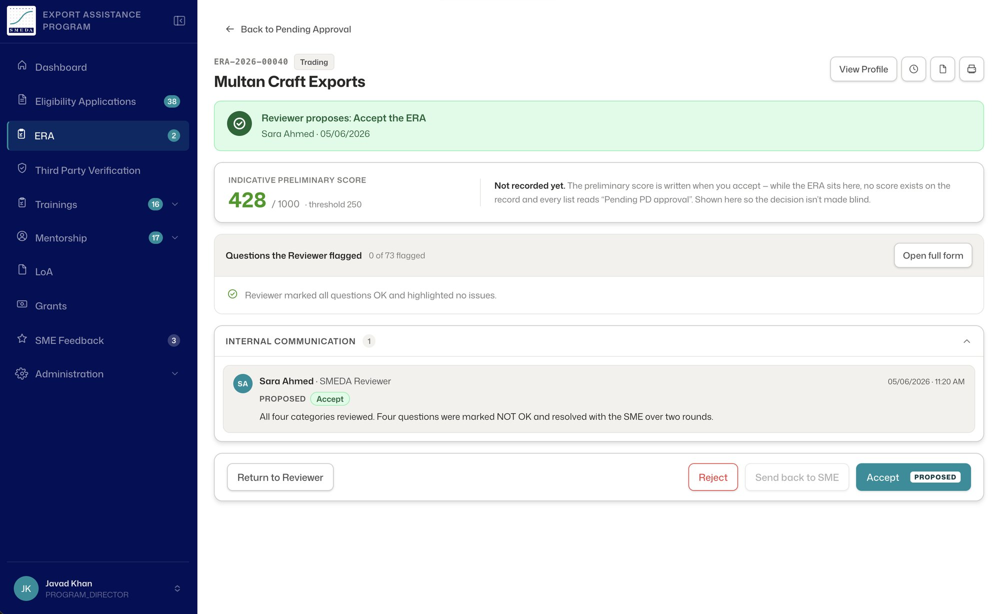
01Decide on an ERA
05 The journey
One case, from application to assessment.
Apply and assess
The business fills in the ERA in four parts. Reviewers and the Program Director work from queues and one page per case, and the business can always see where its application stands, in English and Urdu.
Verify on site
The TPV Admin assigns each case to a field agent and tracks the workload.
On the Android app, the agent checks in at the business by GPS, verifies the ERA answers and submits them for review.
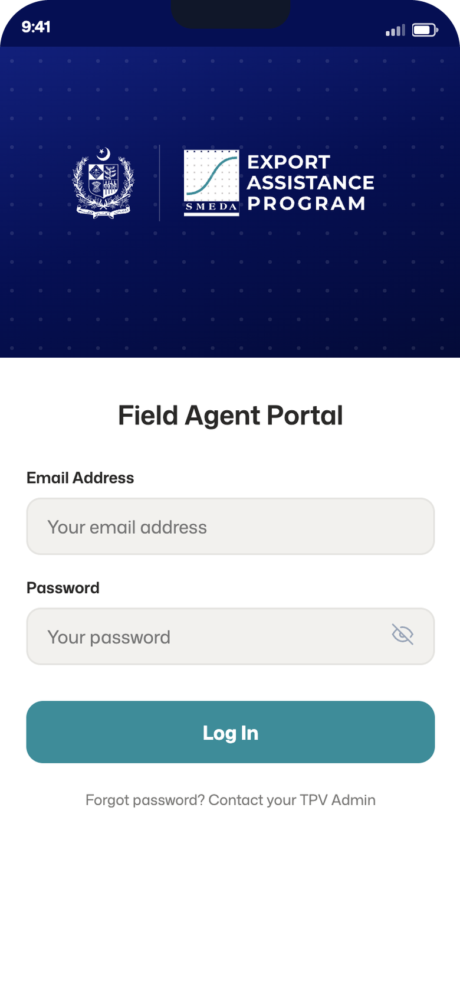
01Sign in
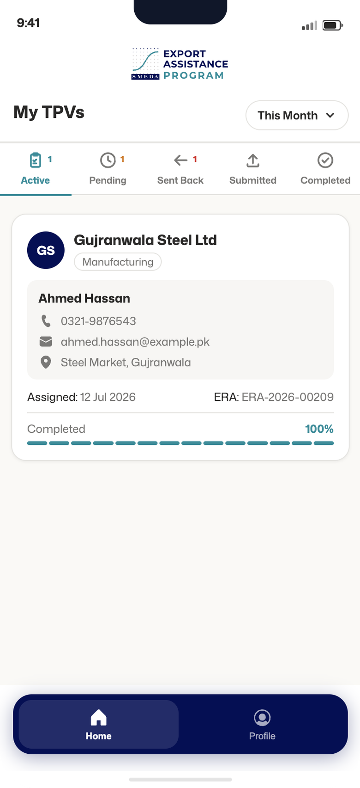
02My TPVs
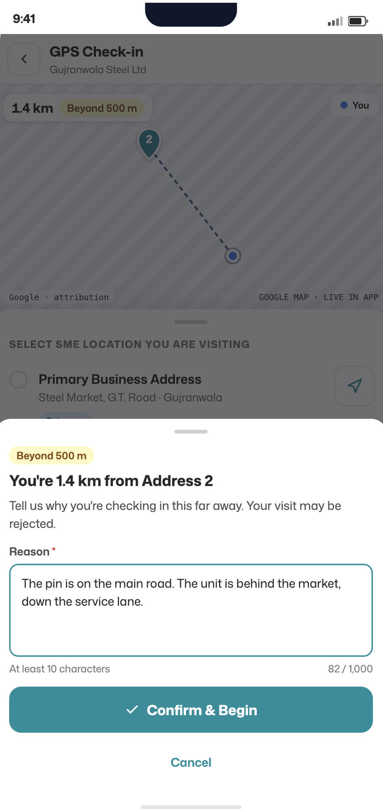
03GPS check-in
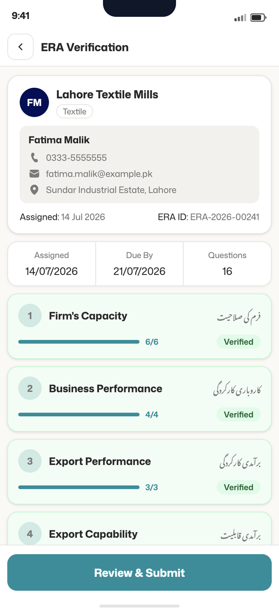
04Verify the ERA
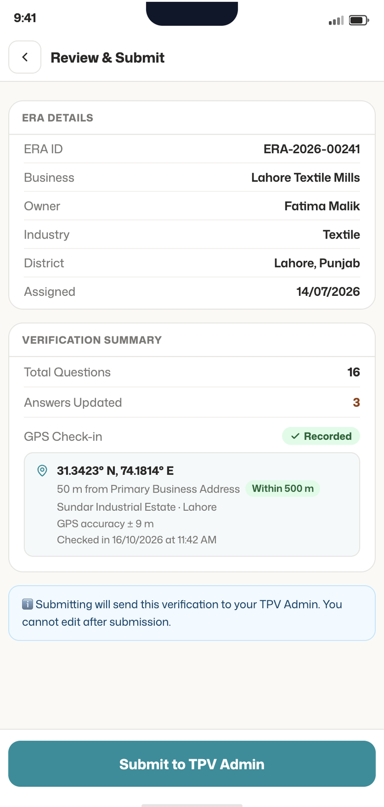
05Review and submit
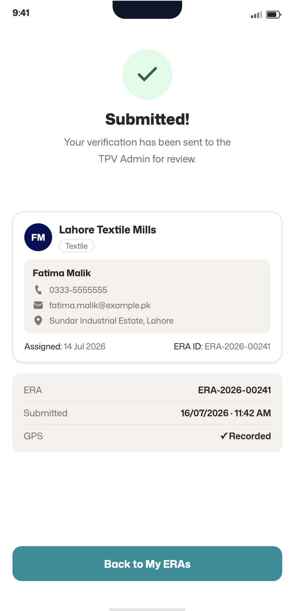
06Submitted
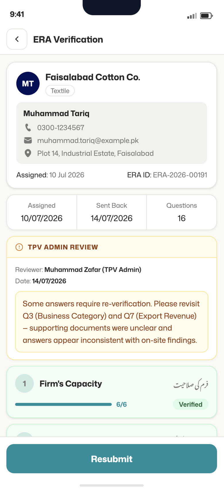
07Sent back
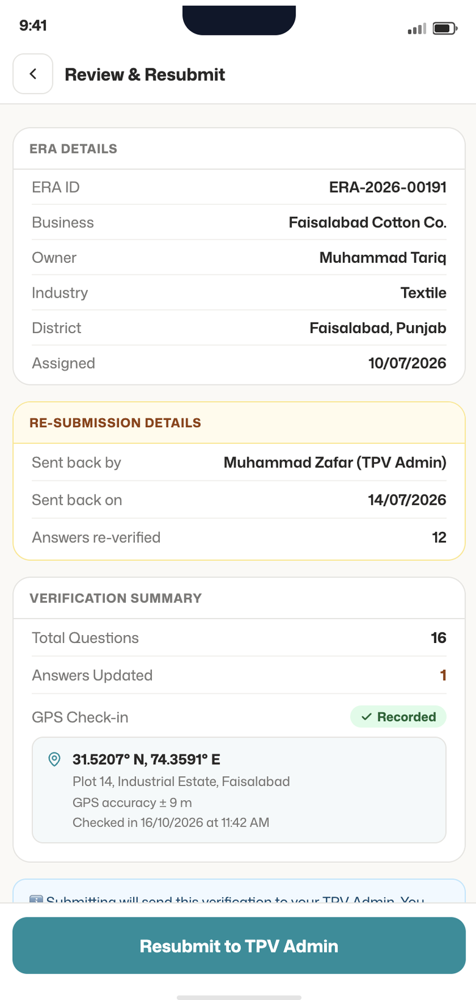
08Review and resubmit
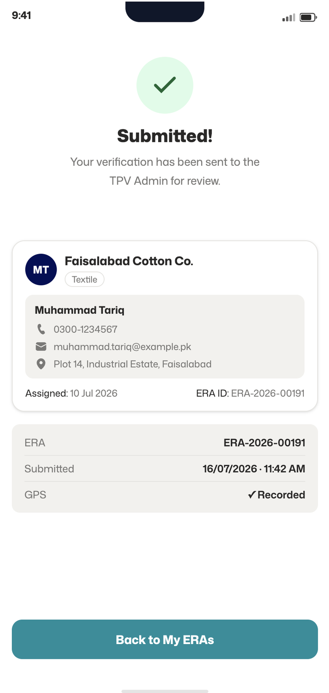
09Resubmitted
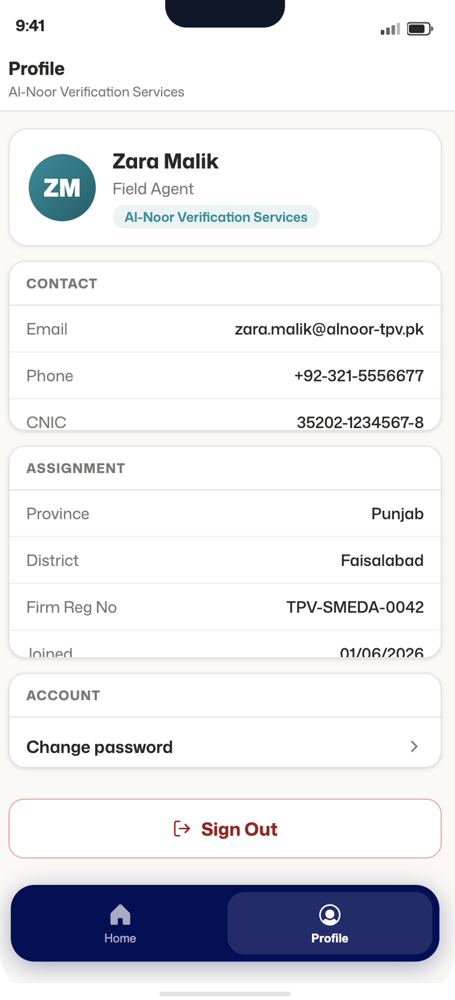
10Profile
Train
Training providers schedule batches, and trainers upload proof and score every business after the training.
Mentor
Mentoring providers assign mentors, mentors log each session, and the business's report card shows its score in every ERA category.
Oversee
The Program Director sees everything waiting on them in one place, and admins manage firms and users.
06 Outcome
Designed end to end.
From requirements to solution: testing, prototyping, QA, design feedback, design iterations, to final handoff.
| Evidence | Result |
|---|---|
| Delivered | Every module except the SMEDA Committee and Letter of Approval, each through QA, from requirements to final handoff |
| Not yet measured | Usage and processing times |
07 Learnings
What I'd take to the next project.
Design for the business goal
Sometimes the business goal, not personal preference, is the real reason behind a design.